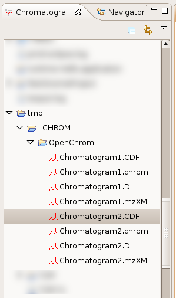
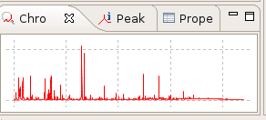
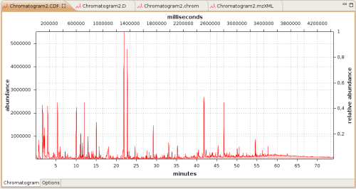

Chromatogram File Explorer
Chromatogram files can be opened using the chromatogram file explorer.
A single click or selection opens the chromatogram overview.
A double click opens the chromatogram editor.
It's not important if the chromatogram is stored in a file (*.CDF, *.ionXML, ...) or in a directory (*.D).
The converter takes care of it.
Chromatogram file explorer:

Chromatogram overview:

Chromatogram editor:
